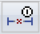

Track Dimension Changes commandLists changed or detached dimensions, changed or detached annotations, and hole table changes after updating a drawing view.
How do I
Review changed dimensions and annotationsLearn more
DimensionsTracking dimension and annotation changes